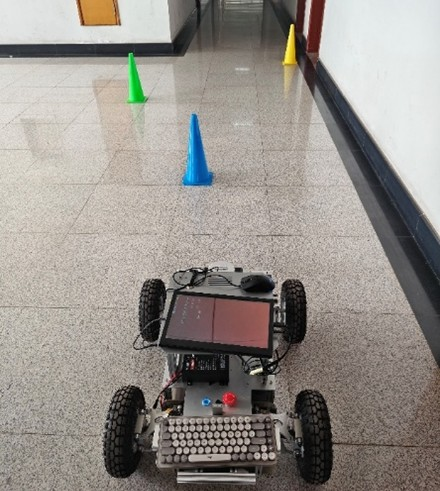
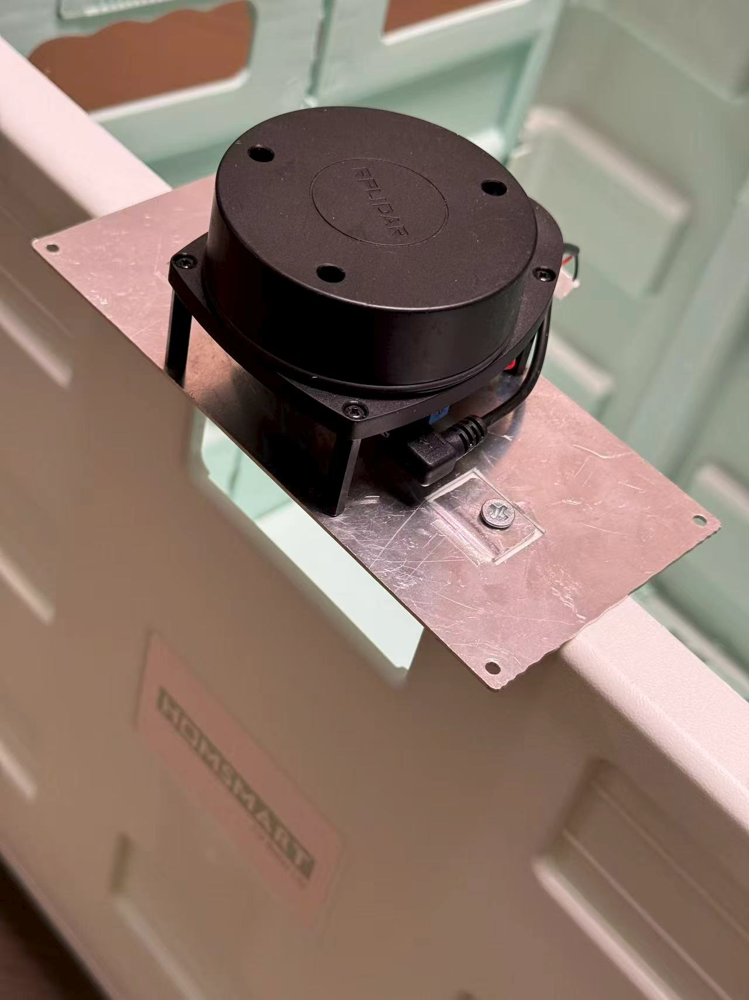
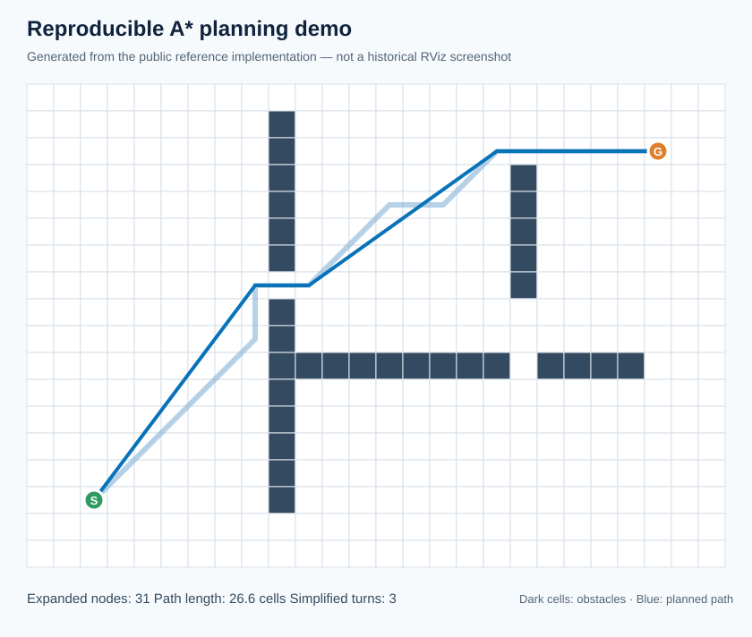
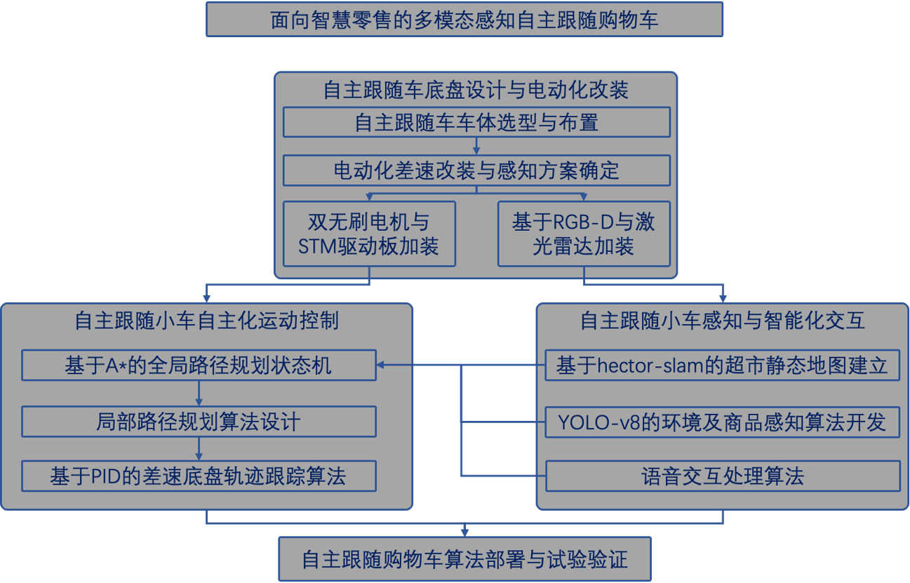

Sense
LiDAR and odometry capture the surrounding geometry and robot state.
A two-stage indoor robotics project: the team first modified a green folding shopping cart, then transferred navigation, obstacle avoidance, and motion-control testing to a four-wheel mobile platform.
The project began with the electric and sensor modification of a green folding shopping cart. The team later adopted a four-wheel mobile platform to evaluate path planning, trajectory tracking, and corridor obstacle avoidance.


Project lead · Path-planning developer · System-integration coordinator
The first-stage prototype established the mechanical and sensing foundation before the project moved to the later four-wheel platform for navigation and control experiments.

The verified planning workflow connects sensor inputs, occupancy-grid representation, global-local planning, and closed-loop control.
LiDAR and odometry capture the surrounding geometry and robot state.
A binary occupancy grid marks free space and obstacles for route generation.
A* generates the global route while local planning reacts to nearby obstacles.
Closed-loop control converts path error into differential wheel commands.

